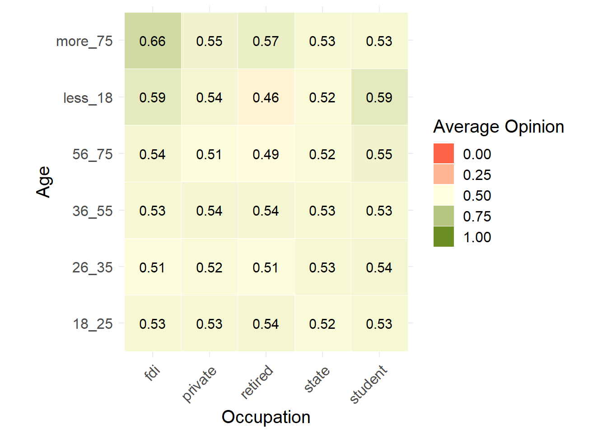

This document contains examples of contingency tables with each tile containing number (average,count,sum). The data consists of randomized rows of 12900 responses of household survey conduct for the Urban Transport Modelling for Sustainable Well-Being in Hanoi project. Since the rows of each column are randomized, the below tables demonstrate a visualization technique but the values of each tile are random hence do not represent the findings of the survey.
Load libraries and data
When you click the Render button a document will be generated that includes both content and the output of embedded code. You can embed code like this:
library(here)
here() starts at C:/Users/libkbr/Documents/GitHub/Contingency_table_R
v ggplot2 3.3.5 v purrr 0.3.4
v tibble 3.1.6 v dplyr 1.0.8
v tidyr 1.2.0 v stringr 1.4.0
v readr 2.1.2 v forcats 0.5.1
-- Conflicts ------------------------------------------ tidyverse_conflicts() --
x dplyr::filter() masks stats::filter()
x dplyr::lag() masks stats::lag()
# load datalibrary(tidyverse)# Data cleaning functionlibrary(here)#check here() file path, which should be Contingency_table_R directorysource(here("clean_data_anon.R"))source(here("wrangledata_functions.R"))# load data# df<- read_csv(here("..","data-not-synced","anon_survey1.csv")) %>% # new datadf<-read_csv(here("anon_survey1.csv")) %>%# Clean datadata_clean() %>%# add col for numeric opinion on the ban and create ordered factors #for age and number of veh ownedban_numeric()
Rows: 12900 Columns: 137
-- Column specification --------------------------------------------------------
Delimiter: ","
chr (71): group_1_general_info/Gender, group_1_general_info/Age, group_1_ge...
dbl (52): group_1_general_info/_living_location_nr_latitude, group_1_genera...
lgl (11): group_1_general_info/living_quality/living_quality, group_1_gener...
dttm (3): start, end, _submission_time
i Use `spec()` to retrieve the full column specification for this data.
i Specify the column types or set `show_col_types = FALSE` to quiet this message.
You can add options to executable code like this
# do contingency table of opinion on the ban for different age groups and occupationsdf %>%group_by(occup, age) %>%summarise(n=round(sum(opinion_ban1)/n(),2)) %>%ggplot(aes(x = occup, y = age, fill = n )) +geom_tile(#aes(sum(df$opinion_ban1)) ,color ="white") +scale_fill_gradient2(high ="olivedrab", low ="tomato",mid="lightyellow",midpoint =0.5,space ="Lab", name="count" ,limits=c(0,1)) +# make sure x and y have the same scalingcoord_fixed() +# add the values to the tiles, using row and name as coordinates geom_text(aes(occup,age,label=n), color ="black", size =4) +theme_minimal() +# adjust text direction on x-axis theme(axis.text.x =element_text(angle =45, vjust =1,hjust =1),text =element_text(size=15), ) +# remove the axis labels by making them blankxlab("Occupation") +ylab("Age") +guides(fill=guide_legend(title="Average Opinion"))
`summarise()` has grouped output by 'occup'. You can override using the
`.groups` argument.

The above table shows average opinion of given tile subgroup. Alternatively, one may be interested in counts for subgroup or another value calculated for the subgroup.
For example, we could examine the trip frequency and purpose of the trip and their link to average opinion:
# do contingency table of opinion on the bandf %>%group_by(freqmon1, age) %>%summarise(n=round(sum(opinion_ban1)/n(),2)) %>%ggplot(aes(x = freqmon1, y = age, fill = n )) +geom_tile(color ="white") +scale_fill_gradient2(high ="olivedrab", low ="tomato",mid="lightyellow",midpoint =0.5,space ="Lab", name="count" ,limits=c(0,1)) +# make sure x and y have the same scalingcoord_fixed() +# add the values to the tiles, using row and name as coordinates geom_text(aes(freqmon1,age,label=n), color ="black", size =4) +theme_minimal() +# adjust text direction on x-axis theme(axis.text.x =element_text(angle =45, vjust =1,hjust =1),text =element_text(size=15), ) +# remove the axis labels by making them blankylab("Age") +xlab("Trip frequency per month") +guides(fill=guide_legend(title="Average Opinion"))
`summarise()` has grouped output by 'freqmon1'. You can override using the
`.groups` argument.